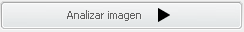
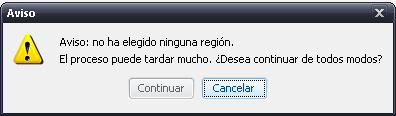
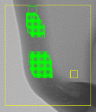

XRayDetector permite analizar imágenes con clasificadores ya entrenados. En este documento se incluye la ayuda acerca de esta funcionalidad
Antes de comenzar el análisis, se puede seleccionar sólo una región de la imagen abierta para no tener que analizar toda la imagen. Para ello, simplemente ponga el cursor del ratón sobre la imagen, haga click con el botón izquierdo del ratón y, sin soltarlo, arrastre el cursor hasta conseguir la región deseada.
Una vez seleccionada la región, simplemente pulse el botón .
Si no selecciona ninguna región, la aplicación le avisará de que el proceso de detección de defectos puede tardar mucho, dándole la opción de cancelar el proceso o seguir con él:

Antes de iniciar el proceso de detección, la aplicación le pedirá que especifique un modelo ya entrenado para realizar esa detección. Los modelos son archivos .model, de los cuales puede obtener más información en el proceso de entrenamiento de un clasificador.
Se abrirá un cuadro de diálogo en el que puede navegar por su sistema, pudiendo así elegir el archivo que considere necesario.
Una vez que ha encontrado el archivo que desea, pulse el botón ACEPTAR. La aplicación iniciará el proceso de detección de defectos.
Mientras el programa va analizando la imagen, usted verá una serie de cuadros amarillos que van corriendo sobre la imagen. Ésas son las ventanas que el programa usa para determinar si existen defectos. Si alguna contiene defectos, se colorearán en verde.

Mientras este proceso está en marcha, no podrá realizar otras acciones, como seleccionar regiones o entrenar un clasificador.
En cualquier momento, puede parar el proceso de detección pulsando el botón
. La aplicación volverá al estado inicial.
Cuando el proceso acaba, se muestran los resultados de la detección. Para más información, consulte la ayuda sobre los resultados.
Se pueden cambiar algunas opciones de la detección de defectos, como el tamaño de la ventana y el salto de la misma, o qué estrategia se va a seguir para detectar defectos. Para más información, consulte la ayuda sobre las opciones avanzadas.